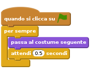
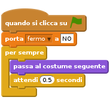
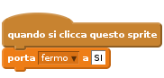
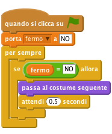
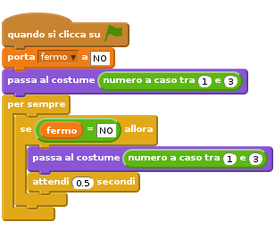
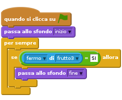
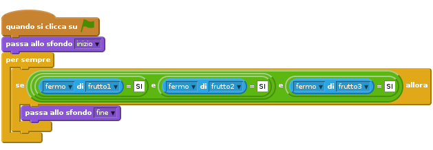
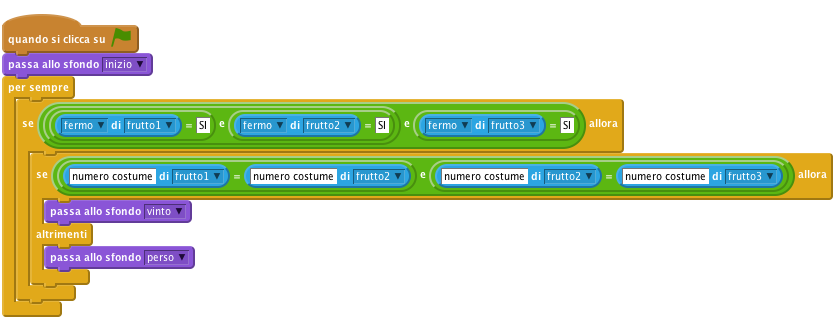

Introduzione
Questo e’ il gioco della Slot Machine. E’ un gioco che ha 3 sprite che cambiano il loro aspetto (costume). Lo scopo e’ di fermare i 3 sprite sullo stesso frutto (come una Slot Machine).

Passo 1: Crea uno sprite che cambia il suo aspetto (costume)
Lista delle Attivita’
Importa tutti gli sprite del gioco
- Crea un nuovo progetto Scratch. Rimuovi il gatto Felix con click-destro e seleziona cancella.
- Prima di tutto aggiungiamo uno sfondo. Nel tab
Sfondiaggiungi un nuovo sfondo. Fai click suScegli uno sfondo dalla libreria. Seleziona rays dalla categoria Altro. Cancella lo sfondo originale. - Adesso aggiungi gli sprite dalla libreria di Scratch.
- Scegli un immagine da qualsiasi categoria. Noi abbiamo usato banas nella categoria Altro, ma tu puoi usare l’immagine che preferisci.
- Fai click sulla
**i**blue dello sprite e cambia il nome infrutto1 - Adesso seleziona il tab
Costumie importa altri 2 sprite (frutti) in modo di avere 3 costumi in totale (noi abbiamo usato Altro/apple e Altro/watermelon-a, ma tu puoi usare le immagini che preferisci.).
Adesso abbiamo un frutto con 3 aspetti, facciamo in modo che lo sprite cambi costume.
Passo 2: Far cambiare il frutto
Lista delle Attivita’
- Fai click sul tab
Script. - Fai click su
Situazionie trascina un bloccoquando si clicca su bandierinaall’interno dell’area dello script. Questo blocco verra’ eseguito quando si premera’ sulla bandierina verde per dar inizio al gioco. - Fai click sul tab Controllo ed aggiungi un blocco
per sempree fallo aderire al blocco precedente. - Fai click sulla bandierina verde in alto a destra. Nota come lo script venga evidenziato con un bordo giallo. Cio’ indica che lo script e’ in esecuzione.
- Adesso fai click su
Aspettoe trascina il bloccopassa al costume seguente - Come facciamo a rallentare il cambio del costume in modo che non sia troppo veloce? Fai click su
Controlloe trascina un bloccoattendi 1 secondi Regola il tempo di attesa finche’ i frutti non si alternano abbastanza velocemnete (un tempo di 0,5 secondi va bene). Cosa succederebbe se non avessimo aggiunto il blocco di attesa?

Verifica il tuo progetto
Fai click sulla bandierina verde.
- I frutti si alternano ad una velocita’ adeguata?
Salva il tuo progetto
Cose da provare
- Regola il tempo di attesa nel blocco
attendi 1 secondi - Quali tempi di attesa pensi che renderebbero il gioco troppo facile o troppo difficile?
Passo 3: Fermiamo la rotazione quando facciamo click sul frutto
Lista delle Attivita’
Fantastico! Siamo in grado di far cambiare il frutto per sempre, ma come facciamo a fermarlo quando gli facciamo click sopra?
Un modo possibile e’ di usare una variabile per tenere traccia dello stato dello sprite. La useremo dopo…
- Crea una nuova variabile facendo click su
Variabili e Listee poi suCrea una variabile. Chiamalafermoe creala solo per questo sprite. Deseleziona lo spunta vicino al nome della variabile in modo che non appaia nello stage. Siccome all’inizio del gioco lo sprite non e’ stato ancora fermato, impostiamo il valore iniziale della variabile a NO.

Adesso impostiamo la variabile
fermoa SI quando facciamo click sullo sprite per fermarlo.
Per ultimo dobbiamo fermare il cambiamento del costume dello sprite quando la variabile
fermoassume il valore “SI”. Aggiungi un bloccose..alloraed usa un blocco =[] = [](lo trovi nella sezione Operatori) per verificare se la variabilefermoe’ ancora uguale a “NO”
Verifica il tuo progetto
Fai click sulla bandierina verde, aspetta un attimo e poi fai click sullo sprite.
- Vedi lo sprite cambiare costume prima che gli fai click sopra?
- Lo sprite si ferma quando gli fai click sopra?
- Fai ripartire il gioco. Se posizione il mouse sul frutto senza fare click lo vedi fermarsi?
- Se fai click in un punto qualunque dello stage, vedi il frutto fermarsi?
Salva il tuo progetto
Passo 4: Crea gli altri sprite
Ora dobbiamo creare gli altri due sprite in modo da poter giocare con la nostra Fruit Machine!
Lista delle Attivita’
- Duplica lo sprite (frutto1) selezionando
duplicadopo aver premuto il tasto destro del mouse sullo sprite stesso. - Duplicalo ancora una volta cosi’ avrai 3 frutti sullo schermo.
- Allinea gli sprite orizzontalmente. Se necessario rimpiccioliscili un po’.
Verifica il tuo progetto
Fai click sulla bandierina verde. Devi vedere tutti gli sprite che cambiano aspetto. Prova a fermare i frutti uno per uno facendogli click sopra!
Salva il tuo progetto
Passo 5: Assegniamo ad ogni sprite un costume diverso
Facciamo in modo che quando fai click sulla bandierina ad ogni sprite venga assegnato casualmente un costume.
Quando inizia il gioco tutti gli sprite hanno lo tesso costume e tutti e tre cambiano allo stesso modo. Se i costumi degli sprite cambiassero in modo casuale il gioco diventerebbe sicuramente piu’ divertente!!
Lista delle Attivita’
- Se guardi nel tab
Costumidi uno sprite vedrai che ogni costume ha un numero. E’ possibile specificare quale costume uno spriteindossera'tramite il suo nome o numero. - Per assegnare un costume casuale agli sprite aggiungi un blocco
passa al costumecon un blocconumero a caso tra (1) e (3). Posiamo usare esattamente lo stesso blocco dentro il ciclo
per semprein modo da cambiare il costume di tutti gli sprite in modo casuale durante il gioco.
Fai la stessa cosa per tutti gli sprite
Verifica il tuo progetto
Fai click sulla bandierina verde. Adesso tutti gli sprite dovrebbero cambiare aspetto in modo casuale.
- Come dovremmo cambiare lo script se aggiungessimo un altro costume?
Salva il tuo progetto
Cose da provare
Rendi il gioco piu’ difficile
Aumenta in qualche modo la difficolta’ del gioco. Cambiare i costumi piu’ velocemnete non e’ difficile. Riesci a pensare a qualcosa di piu’ difficile?
Ecco alcune idee che puoi provare:
- Assegna un numero di costumi diversi per ciascun sprite
- Fai in modo che alcuni sprite abbiamo dei costumi unici
- Cambia i costumi con velocita’ diverse
Divertiti provando le tue idee!! Ogni volta che cambi qualcosa pensa se il gioco diventa piu’ facile o difficile. Come bilanci la difficolta’ rispetto alla giocabilita’?
Salva il tuo progetto
Passo 6: Visualizza un messaggio quando il gioco finisce.
Visualizziamo un messaggio “Game Over” al giocatore quando ha finito
Lista delle Attivita’
Prima di tutto aggiungiamo uno sfondo da visualizzare quando il gioco finisce.
- Fai click nello stage e poi su
Sfondi. Cambia il nome dello sfondo corrente ininizio. - Duplica lo sfondo ed usando lo strumento
Testoaggiungi una scritta Game Over. Puoi variare la dimensione del testo facendogli click sopra e trascinando un angolo. Cambia il nome infine - Fai click su
Scriptper lo stage ed imposta lo sfondoinizioall’inizio del gioco. Come capiamo quando tutti gli sprite sono fermi? Ricordi la variabile
fermoche abbiamo usato per tenere traccia dello stato degli sprite? Controlliamo il varole della variabilefermoper frutto3 per verificare se il gioco e’ terminato. Seleziona lo sprite frutto3 e usa il bloccoposizione x di frutto3, nella sezioneSensori. Cambiaposizione xconfermo.
Verifica il tuo progetto
Fai click sulla bandierina verde.
- Vedi apparire il messaggio “Game Over” quando fai click sul frutto3?
- Cosa succede se fai click su frutto3 prima di fare click sugli altri due frutti? Adesso cambiamo lo script in modo che funzioni indipendentemente dall’ordine di fermata dei frutti.
Salva il tuo progetto
Per verificare che tutti e tre i frutti abbiano la variabile fermo impostata su SI possiamo usare l’operatore e. Questo blocco e’ un po’ complicato quindi creiamolo un passo alla volta.

Verifica il tuo progetto
Fai click sulla bandierina verde.
- Vedi apparire il messaggio “Game Over” quando tutti e 3 i frutti sono fermi indipendentemente dall’ordine di fermata?
Salva il tuo progetto
Passo 7. Fai sapere al giocatore se ha vinto o perso
Lo scopo del gioco e’ di fermare i 3 sprite che girano sullo stesso frutto. Sarebbe carino visualizzare un messaggio che dice se il giocatore ha vinto o perso.
Lista delle Attivita’
- Al Passo 6 abbiamo aggiunto allo script la logica che verifica se il gioco e’ finito. Adesso dobbiamo solo verificare se il giocatore ha vinto. Ritorna allo sfondo ed aggiungi un altro testo (“VINTO!”) allo sfondo
fine. Cambia il nomde dello sfondo invinto. - Duplica lo sfondo e chiamalo
perso. Modifica il testo con PERSO!. Adesso dobbiamo aggiungere la logica che decida quale sfondo visualizzare alla fine del gioco. Possiamo usare il blocco
se...allora...altrimentiin modo da verificare se il giocatore ha vinto o perso confrontando ogni costume. Possiamo usare in bloccoposizione x di frutto3, nella sezioneSensori. Questa volta anziche’ verificare lo stato della variabilefermodobbiamo verificare ilnumero del costume, e controllare che il numero di costume del frutto 1 sia uguale a quesllo del frutto 2. Poi dobbiamo verificare che il numero di costume del frutto2 sia uguale a quello di frutto3. (properieta’ transitiva)
Verifica il tuo progetto
Fai click sulla bandierina verde.
- Quando il gioco finische vedi apparire il messaggio corretto?
- Cosa succederebbe se il numero di costume non coincidesse (per esempio il costume 3 di frutto2 e’ una mela mentre il costume 3 di frutto3 e’ un anguria)?
Salva il tuo progetto
Ben fatto!!! Hai finito il gioco base. Ci sono altre cose che puoi fare con il tuo gioco. Dai un occhiata alla sfida!
Sfida: Rendi il gioco piu’ semplice o difficle al passare del tempo.
Giocatori differenti hanno diversi abilita’. Come puoi adattare la difficolta’ del gioco in base al giocatore?
Un modo e’ di variare la velocita’ di cambiamento dei costumi. Puoi usare una variabile ritardo da usare nel blocco attendi per ogni sprite. Se il giocatore vince puoi ridurre un po’ il ritardo per rendere il gioco piu’ difficile. Se il giocatore perde il turno puoi aumentare un po’ il ritardo per rendere il gioco piu’ facile.
Probabilmente dovresti pensare ad un modo diverso di iniziare il gioco anziche fare click sulla bandierina. In questo modo puoi usare una variabile tra un turno di gioco e l’altro.
Salva il tuo progetto
Ben fatto!!! Hai finito con questo esercizio. Adesso divertiti con il tuo nuovo gioco!!!
Ehi, non dimenticare che puoi condividere il tuo gioco con tutti i tuoi amici e familiari. Basta che fai selezioni il menu File e poi Share to website!!